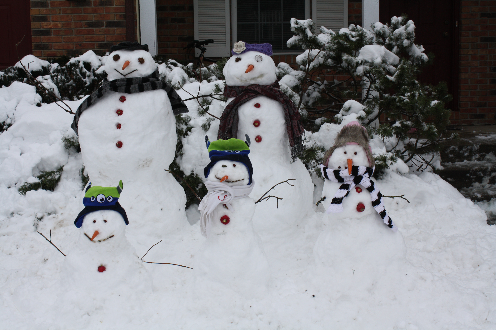
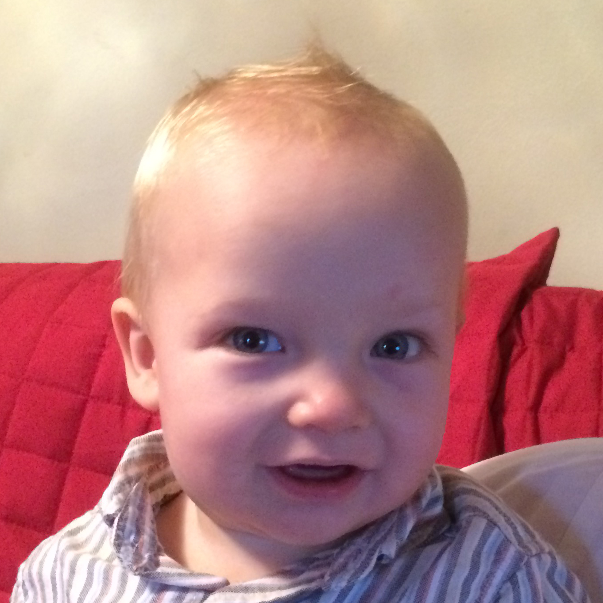
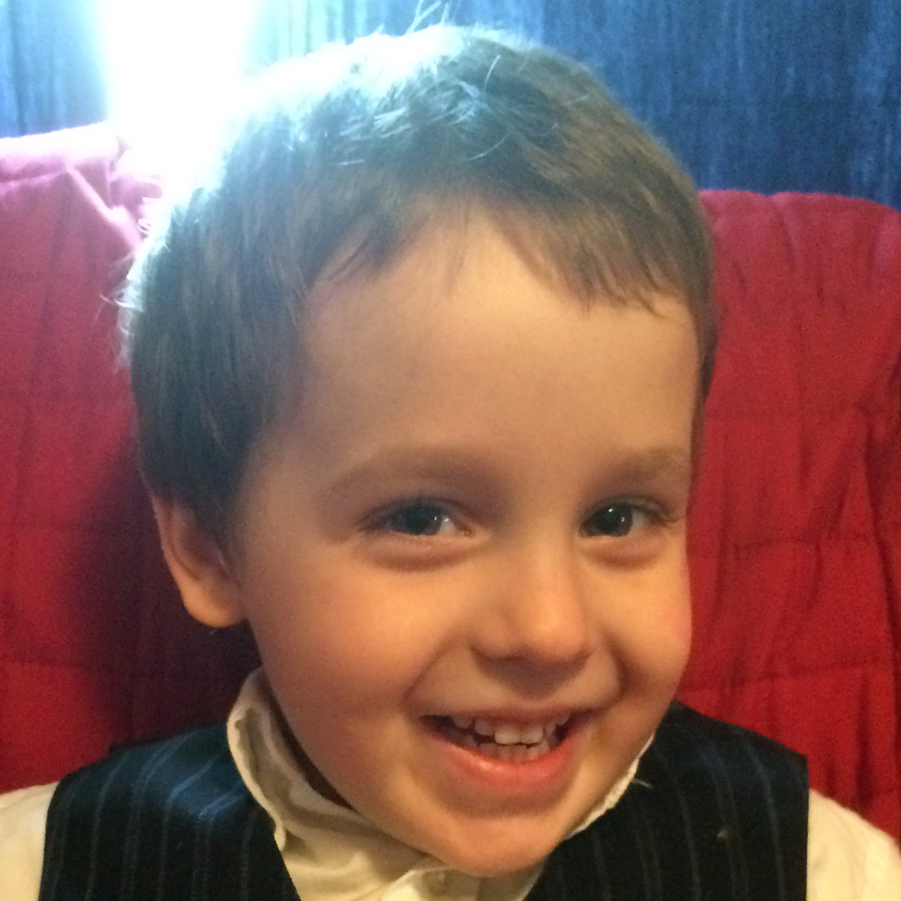
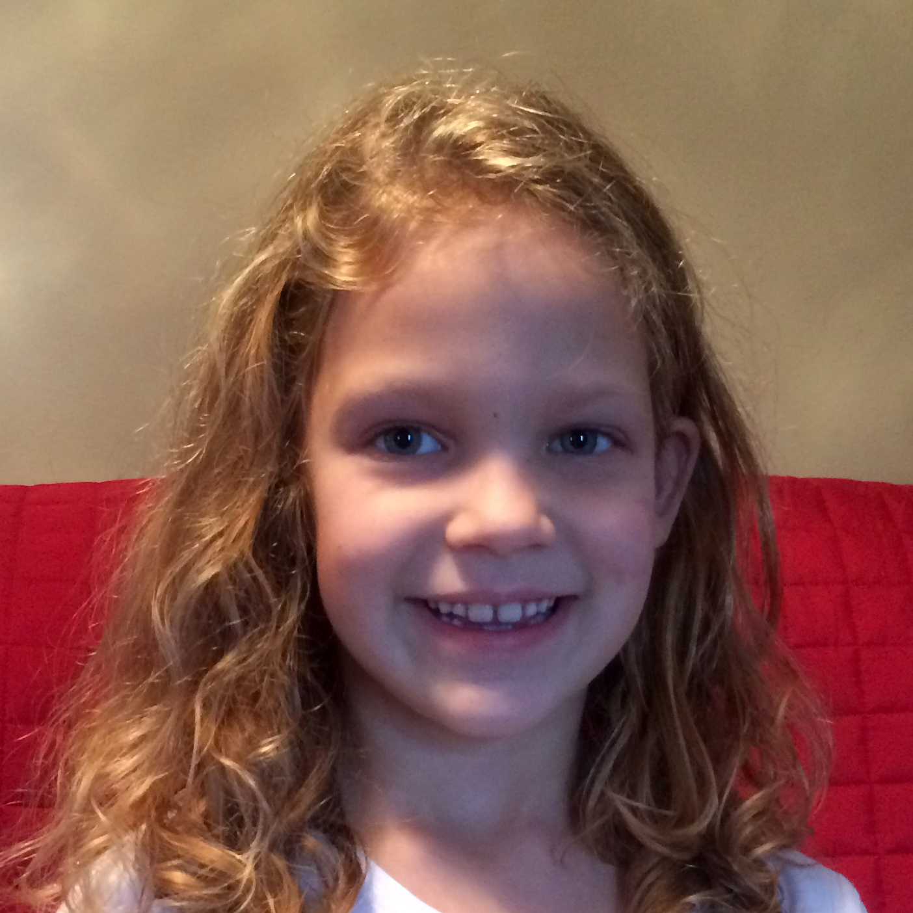

Merry Christmas from the Standages


Hey Joey, what's your favorite part of Christmas?
Mmbaa mmbaa mmbaa!

Josh, what's your favorite part of Christmas?
The Christmas lights. Oh, and Christmas cookies!
What is your favorite Christmas song?
Silent Night.

Heather, what is the most exciting part of Christmas for you?
Opening the presents, and playing the Santa game!
What's your favorite Christmas song?
Christmas Bells Are Ringing.
 What has been the most fulfilling part of your year?
What has been the most fulfilling part of your year?
I really enjoyed planting and tending our garden plot this year.
What's your favorite Christmas tradition?
Singing Christmas songs around the piano, and going caroling to our friends and neighbors.
What has been the most fulfilling part of your year?
Reading the Chronicles of Narnia to the kids at bedtime has been wonderful.
What's your favorite Christmas tradition?
I enjoy baking, eating, and sharing goodies!
Merry Christmas and best holiday wishes to all of our family and friends this year!
With love,
Daniel, Stephanie, Heather, Joshua, and Joseph
P.S. We hope you enjoy these photos from the past year!